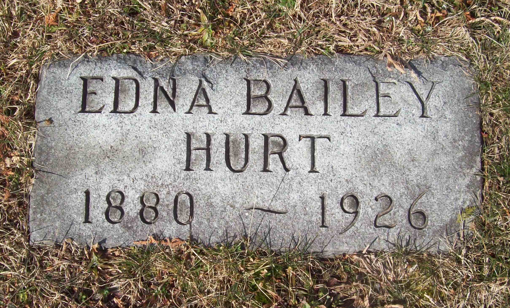

Edna Bailey
31 August 1880 – 19 October 1926
Quick Facts
Immediate Family
Parents
George Washington Bailey DOCUMENTEDLetitia "Tisha" Warden DOCUMENTED
George's parents were Sparrel Bailey and Mary Jane Tyree; Letitia's were Hughes Jefferson Warden and Susan Ann Williams. After George's death, Letitia remarried his first cousin Pyrrhus "Paris" Bailey (about 1916–17). Her compiled death date of 24 September 1925 belongs to kinswoman Lula Bailey Warden; her true death and burial are unproved.
Children
Waldo Emmett Hurt (born 20 September 1902; died 9 December 1904, age 2) SUPPORTEDLaverne Hurt (born 17 October 1906; died 3 October 1986; married Dallas Cecil McKinney) DOCUMENTED
Melba Hurt (born 6 June 1909; died January 1992; never married; teacher) DOCUMENTED
James Roland ("Rowland") Hurt (born 22 November 1910; died June 1980; married Ruby Jane Kessinger) DOCUMENTED
Annadine "Deany" Hurt Duncan (born 7 January 1913; died 19 May 1975; married Harry Andrew Duncan Jr.) SUPPORTED
Unnamed male Hurt (born 1914; fate unknown) DOCUMENTED
Emmett Jay Hurt (born 21 February 1923; died 28 January 1991; World War II Army veteran; teacher and principal) DOCUMENTED
Roster follows the family couple profile (7 children). Geni's Immediate Family grid links only five — Emmett Jay has no Geni profile, so he is carried unlinked; he is named as the sixth child in James's Geni About text and in Tricia's tree (as Emmette J, died 28 January 1991, Beckley). The 1914 unnamed son appears in the couple profile and the birth index only, not in the Nana story's six or on Geni. Waldo is graded SUPPORTED here: the couple profile grades him UNPROVED — his death row names a father "F. E. Hurt" and is filed unplaced — and his 20 September 1902 / 9 December 1904 dates come from the WikiTree entry; no West Virginia birth or death detail page has been opened. Geni titles the fourth child "Rowland Hurt" with only an estimated birth range; the couple profile and James's Geni About text call him James Roland ("Rowland", 1910–1980), and the folder's delayed birth certificate gives James Roland Hurt, born 22 November 1910. Melba's death day reads 15 January in one source and 16 January in the SSDI; James Roland's reads 5 June in one source and 1 June in the SSDI.
Siblings
Mary J. Dunn (Bailey)Edgar Philip Bailey
Charles Henry Bailey
Bertha Snow Mellen (Bailey)
Bernard Bailey
Lilly Bailey
Wilmer Bailey
Ashley Bailey
All eight are click-verified from Edna's Geni profile. Two compiled Bailey genealogies list twelve children, adding Claude, Grace, and Jean — those three have no Geni profile linked here. Charles Henry married Annice Irene Hurt, James's sister — a double sibling marriage (identification probable).
On Family Tree Sites
Life Timeline
31 August 1880 · age 0
Born, Raleigh County, West Virginia DOCUMENTED
14 June 1902 · age 21
Married James Emmette Hurt, Raleigh County, West Virginia DOCUMENTED
1902–1923 · ages 22–43
Seven children born: Waldo, Laverne, Melba, James Roland, Annadine, an unnamed son (1914), Emmett Jay SUPPORTED
19 October 1926 · age 46
Died, Beckley, Raleigh County, West Virginia SUPPORTED
Buried
Wildwood Cemetery, Beckley SUPPORTED
Life Story
Edna Bailey was born on 31 August 1880 in Raleigh County, West Virginia, the daughter of George Washington Bailey and Letitia "Tisha" Warden, of pioneer Bailey stock — her grandfather Sparrel Bailey's father John had come from Franklin County, Virginia, about 1827, before Raleigh County even existed.
She married James Emmette Hurt on 14 June 1902 in Raleigh County. They lived at Beckley their whole married life and had seven children. No occupation is recorded for Edna in the research folder.
She died on 19 October 1926 at Beckley, aged forty-six, and is buried at Wildwood Cemetery in Beckley; her marker reads 1880–1926. James lived on as a widower until 1955. No portrait of Edna has been found; the photograph above is her marker at Wildwood Cemetery.
Photo Gallery

Sources and Evidence
- Raleigh birth register p. 86, the 1900 census, and her death certificate: born 31 August 1880, Raleigh County DOCUMENTED (an old compiled account's "June 19, 1881" is refuted)
- Raleigh County death row: died 19 October 1926, Beckley; mother Letitia Warden SUPPORTED (identification probable; the certificate image has never been read; carcinoma of the uterus is compiled-grade only)
- West Virginia marriage register, Marriages v. 2–3, Film 598432, Image 518, p. 419; record Id 11511827: married 14 June 1902, Raleigh County; the register names no parents for either spouse DOCUMENTED
- Find a Grave memorial 31829698, live-verified 4 November 2026: Edna Bailey Hurt, born 31 August 1880, died 19 October 1926, burial Wildwood Cemetery, Beckley; bio: daughter of George Washington and Letitia Warden Bailey; married James Emmett Hurt SUPPORTED (the page shows no birth or death place)
- Geni profiles, click-verified 4 November 2026: parents George Washington Bailey and Letitia "Tisha" Warden; eight siblings; children Waldo, LaVerne, Rowland, Melba, and Annadean; spouse James SUPPORTED
- Tricia's Ancestry tree: Edna Bailey, born 31 August 1880, Beckley, died 19 October 1926, Raleigh; parents George Washington Bailey (1852–1916) and Lutitia Bailey-Warden (1855–); marriage 1902, year only SUPPORTED (the tree spells her mother "Lutitia"; Geni and the folder use "Letitia 'Tisha'")
- Delayed birth certificates: Melba Hurt, 6 June 1909; James Roland Hurt, 22 November 1910 DOCUMENTED
- West Virginia birth index Id 2213511: unnamed male Hurt, born 1914, Raleigh, parents James Emmett Hurt and Edna Bailey Hurt DOCUMENTED
- SSDI, Find a Grave memorial 126567123, and his obituary: Emmett Jay Hurt, born 21 February 1923, died 28 January 1991, Beckley; World War II Army veteran; teacher and principal 1948–1985; obituary names his parents James Emmette and Edna Bailey Hurt and his sisters Anna Dean Duncan and Laverne McKinney DOCUMENTED
Grades: DOCUMENTED an original record says it · SUPPORTED several records point to it · FAMILY ACCOUNT the family's own telling · UNPROVED a lead, not proved.
Research Notes and Open Questions
- Death: the 19 October 1926 Raleigh County death row is graded probable as Edna's identification — the certificate image has never been read; the row names her mother as Letitia Warden. Carcinoma of the uterus is carried at compiled grade only. Her marker reads 1880–1926 at Wildwood Cemetery.
- Birth: an old compiled account's "June 19, 1881" is refuted by the birth register, the death certificate, and the 1900 census.
- Marriage-register reads conflict: the license date is read as 12 June 1902 in some notes and 14 June in the direct image read; an earlier note's "register vol. 4, p. 218" citation is contradicted by the direct transcriptions (v. 2–3, p. 419); the minister's and informant's names vary across reads (Backus / Barker / Beasley; Mellen / Meadows). The ceremony date — 14 June 1902, Raleigh County — is consistent across every read.
- Parents: George Washington Bailey was born January 1852, Raleigh County (supported); his death 12 October 1916, typhoid, is claimed only (death certificate never viewed). His parents were Sparrel Bailey and Mary Jane Tyree, documented via cemetery transcription; an old compiled account's "Mary Jane Miller" is contradicted. Letitia "Tisha" Warden was born 9 November 1855, Raleigh County (documented — birth register, parents Hughes and Susan Warden); she was the daughter of Hughes Jefferson Warden and Susan Ann Williams (documented — 1852 marriage record). After George's death she remarried his first cousin Pyrrhus "Paris" Bailey (about 1916–17, supported). Her compiled death date of 24 September 1925 belongs to kinswoman Lula Bailey Warden; her true death and burial are unproved.
- Siblings: two compiled Bailey genealogies list twelve children, adding Claude, Grace, and Jean to Geni's nine. Those three have no Geni profile linked here.
- Children: the roster notes on James's page apply here too — Waldo graded SUPPORTED against the couple profile's UNPROVED (death row names a father "F. E. Hurt", filed unplaced); Emmett Jay carried unlinked (no Geni profile exists); the 1914 unnamed son in the couple profile and birth index only; James Roland against Geni's "Rowland" (see James's page); Melba's and James Roland's death days conflicted by one day each.
- Find a Grave: her memorial 31829698 is live-verified (see Sources). The spouse link on her memorial points to memorial 31829692 for James, but that page could not be read — Find a Grave blocked the browser twice — so nothing is claimed about it here.
- MyHeritage: a profile was verified live 21 October 2026 but its URL was not filed, so no tile is shown.
- No portrait of Edna has been found; her marker photograph is her hero image. The small duplicate of the same marker stone in the folder is not shown separately.
- Lore not carried: Pocahontas's-sister lore (about 5%, unbacked) and free-person-of-color lore (about 10–15%, unbacked) are not on this page; the "Jane Kincaid full-blooded Cherokee" attribution is contradicted (a separate North Carolina/Georgia Kincaid branch).
Profile history: Created 4 November 2026 from the family couple profile and research notes.